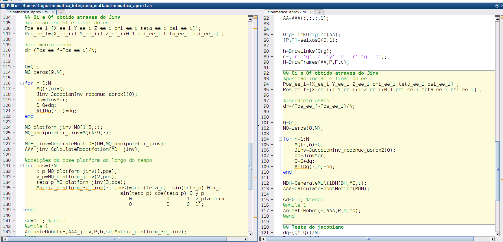
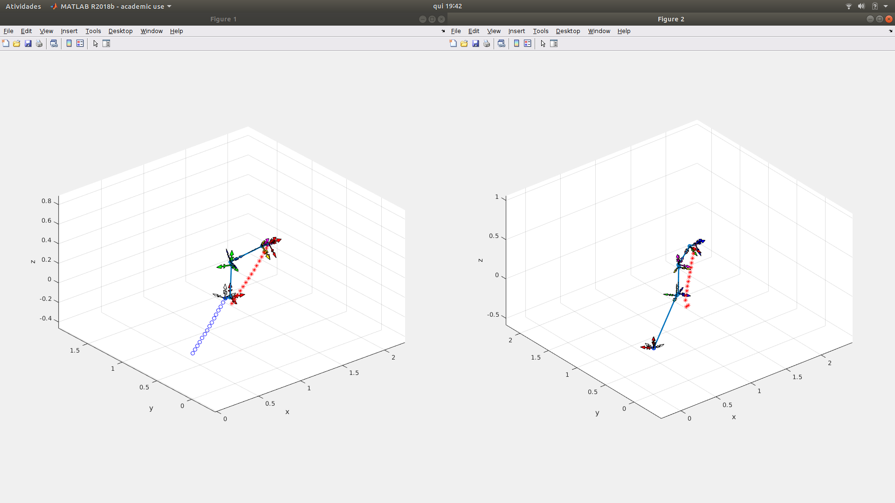
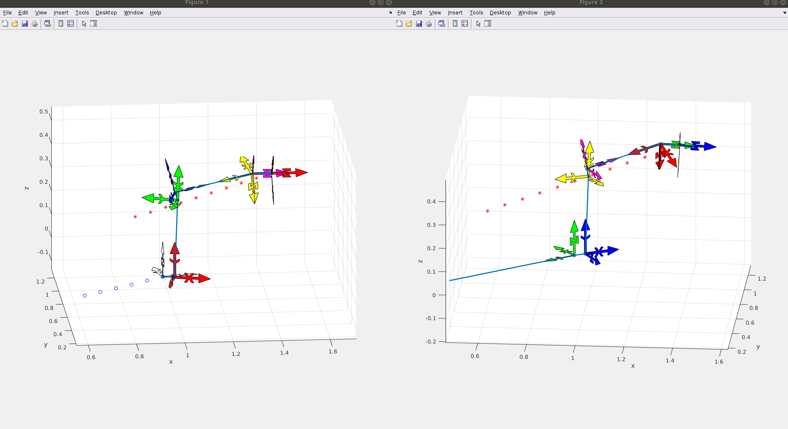

Esta semana foi dedicada exclusivamente ao ultimo capítulo da dissertação: “Cinemática Integrada”. Foi necessário estudar o funcionamento de ferramentas utilizadas até ao momento (e novas), de forma a perceber a possibilidade de implementação de um modelo cinemático integrado para o manipulador móvel real (ROBONUC).
De modo a perceber a problemática e iniciar uma formulação de um modelo cinemático procedeu-se à analise da literatura referente a manipuladores móveis. Salienta-se a dificuldade de encontrar referencias a questões fundamentais da cinemática.
Posteriormente, formulou-se dois modelos de cinemática integrada. A primeira abordagem teve em conta a cinemática de um robô móvel com cinemática diferencial com a cinemática tradicional de um manipulador robótico. Para a segunda admitiu-se que a plataforma poderia ser representada por uma junta rotacional seguida de uma junta prismática, e assim trabalhar a cinemática integrada como um manipulador tradicional (com 8 juntas).
Apresenta-se na imagem seguinte, parte do código onde é possível visualizar do lado esquerdo a abordagem 1, e do lado direito a abordagem 2. Após o calculo do Jacobiano associado a cada um das abordagens, utilizou-se o modelo de cinemática diferencial para ir de um Ponto incial para um Ponto final (em coordenadas cartesianas) e assim saber a sequencia de configuração das juntas entre esses dois pontos.

O resultado da simulação pode ser visualizado nas seguintes imagens:
Caminho percorrido ('o' representam o centro da plataforma móvel, e os '*' a posição do end effector)

Nesta semana iniciou-se também, a escrita do presente capítulo (cap7).